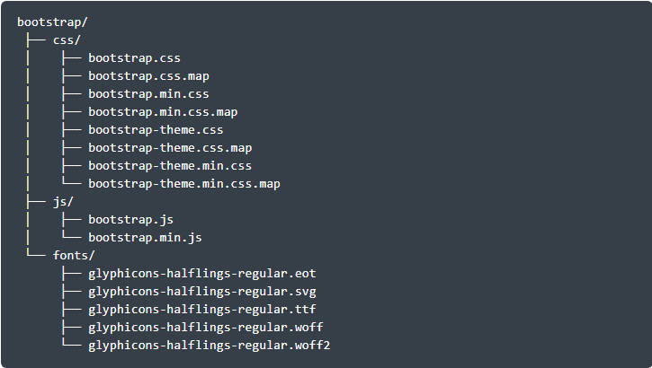

A primeira coisa que você deve saber, para usar o Bootstrap, é como pegar o framework e como iniciar um projeto com ele.
Neste tutorial, você vai ver como fazer o download do Bootstrap e entender como criar as pastas iniciais de um projeto. Além disso, vamos ver para quê que servem cada uma das pastas e arquivos que já vêm com ele.
Ao final, você vai ter um ambiente com o Bootstrap funcionando, e pronto para começar a criar as suas páginas.
Para fazer o download você deve acessar o site do Bootstrap – getbootstrap.com. Você vai ver um botão (Download Bootstrap) no centro, e ao clicar você será direcionado para a área de downloads.
Vão ter várias opções na tela, mas a que você deve usar, por enquanto, é primeira. Basta clicar e fazer o download.
Ao final, você vai ter um ambiente com o Bootstrap funcionando, e pronto para começar a criar as suas páginas.

Depois que terminar o download, você deve extrair os arquivos para uma pasta onde vai ficar o seu projeto. Se você já tiver um servidor local, pode colocar nele.
O pacote do Bootstrap nada mais é do que um arquivo .ZIP com vários códigos CSS e JavaScript, prontos para você usar no seu projeto.
E você pode renomear a pasta que foi extraída com o nome do seu projeto.
Dentro dessa pasta, que agora é o início do seu projeto, você deve ter uma estrutura de pastas como essa:

Observe que há agora uma pasta “CSS”, uma pasta “Fonts” e uma pasta “JS” que vieram com o Bootstrap.
Cada uma delas possui uma versão completa (os arquivos *.css e *.js), e uma versão “minificada” (os arquivos *.min.css e *.min.js) de cada script.
Você deve usar a versão completa quando você quiser ler, ou ter acesso ao código-fonte do Bootstrap. E você deve usar a versão “minificada” (ou minified) quando for colocar seu projeto online, ou seja, em produção.
Por fim, a pasta “fonts” contém os vetores gráficos e a tipografia usada pelo Bootstrap para gerar ícones otimizados para o seu front-end.
Mais à frente, nos outros tutoriais, você poder ver como utilizá-los.
Bom, ainda falta um item nesse setup.
Para o Bootstrap funcionar corretamente, é preciso usar o jQuery. Senão nenhum componente, nem efeitos, irão funcionar. Você pode fazer o download do jQuery no site oficial: jquery.com/download